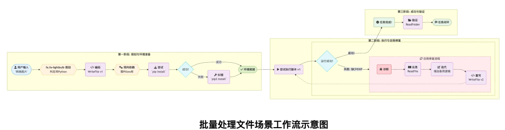
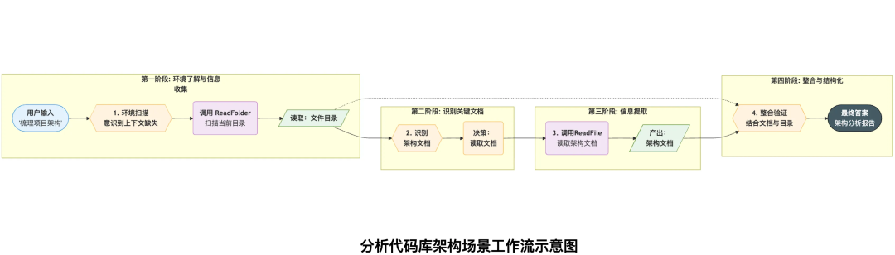
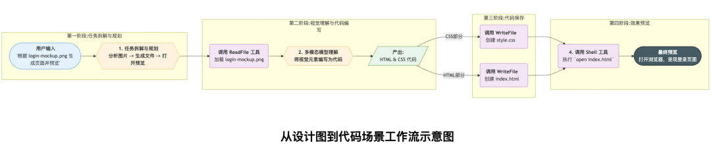
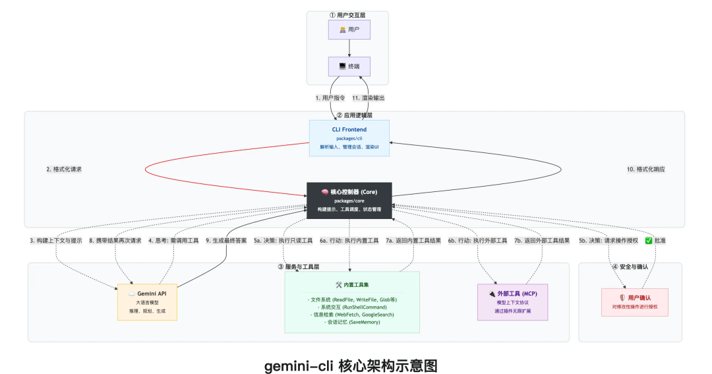
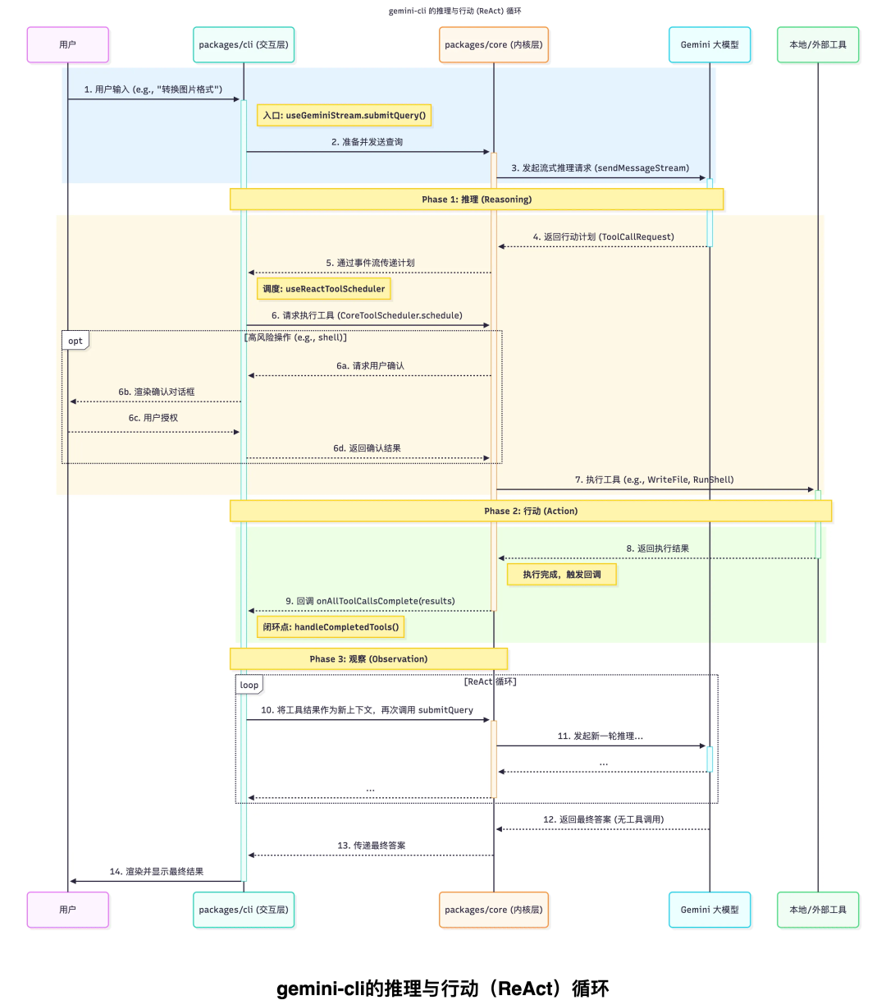
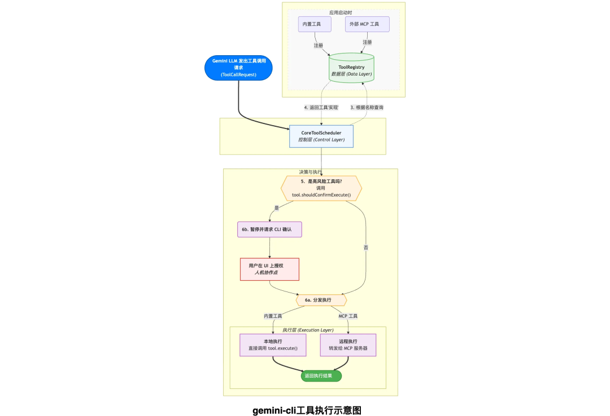
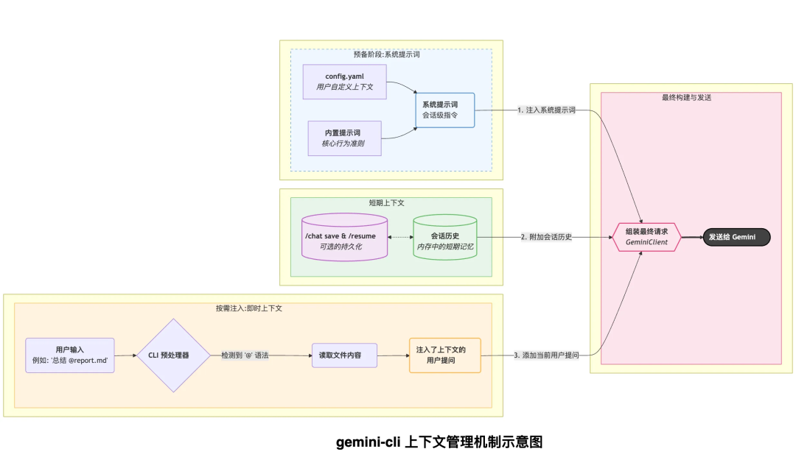

深入剖析Google gemini-cli：终端AI Agent的工程实践与LangChain对比
最近，笔者阅读了腾讯技术工程公众号的文章《深入AI Agent内核: Google gemini-cli 源码深度解构》，颇有启发。该文以Google开源的gemini-cli为切入点，通过源码级拆解，揭示了终端AI Agent从自然语言到实际执行的完整闭环机制。结合笔者对LangChain等框架的了解，这篇文章不仅提供了构建终端Agent的实战蓝图，还引发了对AI Agent架构范式的更深思考：gemini-cli的轻量终端适配与LangChain的通用编排，各有千秋，却在ReAct循环和工具生态上高度契合。本文在保留原作核心洞见的基础上，补充最新版本更新（如Gemini 3 Pro集成）和与LangChain的对比分析，为开发者呈现一份更全面的参考。
一、gemini-cli的核心魅力：从演示场景看Agent“涌现”
gemini-cli本质上将命令行终端转化为AI协作界面，支持多模态输入、复杂任务自动化和Git操作等。最新版本已深度集成Gemini 3 Pro模型，上下文窗口扩展至1M token，推理能力显著提升。
通过三个典型场景，可以直观感受到其“智能涌现”：
- 批量文件处理：面对一堆JPG图片，用户输入“将目录下所有图片转为PNG，并按EXIF拍摄日期重命名”。Agent先规划四步流程，生成Python脚本（而非简单Shell），预装Pillow库时自动切换pip3纠错；脚本初跑失败后，自行读取代码、注入文件修改时间作为EXIF备用逻辑，最终验证结果闭环。这体现了Agent的自我诊断与迭代能力，远超传统脚本工具。

- 代码库快速剖析：克隆gemini-cli仓库后，输入“梳理整体架构”。Agent先扫描目录获取“地图”，识别architecture.md文档优先读取，避免盲目代码解析；结合目录结构交叉验证，输出结构化报告。若文档不足，还可通过内置Google Search grounding补充外部知识。
 - 多模态创意生成：上传登录页截图，输入“生成HTML/CSS并浏览器预览”。Agent拆解为分析图片、分离文件、打开浏览器三步；多模态模型“读懂”布局，生成规范代码（index.html + style.css），直接shell open预览。

这些场景凸显gemini-cli作为“自我纠错分析师”和“视觉创意伙伴”的角色，与LangChain的Agent工具调用类似，但更注重终端轻量执行（如npm或brew一键安装），适合开发者日常而非全栈RAG。
二、架构解构：ReAct循环与分层设计
gemini-cli架构分用户交互层（packages/cli）、逻辑核心（packages/core）和模型/工具层，围绕ReAct（Reason+Act）循环构建。

ReAct循环由cli驱动、core执行：用户输入经prepareQueryForGemini预处理，sendMessageStream发起推理；模型返回ToolCallRequest后，useReactToolScheduler调度CoreToolScheduler验证/确认/执行工具；结果回调handleCompletedTools，重新submitQuery闭环。

工具系统统一由ToolRegistry管理，JSON Schema声明（如read_file的参数），Invocation执行。安全机制对shell命令等高危操作暂停待用户确认，避免“幻觉执行”。MCP协议允许外部工具热插（如Imagen生成），A2A支持Agent间协作。
上下文管理分四层：会话历史（GeminiChat维护完整对话）、系统提示（basePrompt + userMemory合并）、@即时引用（handleAtCommand解析文件注入prompt）、快照持久化（Logger读写本地）。


三、架构思想：与LangChain的异曲同工
gemini-cli的分层（core内核 + cli适配）类似于六边形架构，确保内核可移植（如web服务复用），这点与LangChain的LCEL（LangChain Expression Language）高度一致，但gemini-cli更终端原生，避免LangChain在复杂链式调用时的“抽象臃肿”。
LLM作为动态调度器是核心范式：开发者仅注册原子工具，组合逻辑交给模型ReAct决策，能力“涌现”自迭代（如Self-Refine）。LangChain的Agent也用ReAct，但gemini-cli的回调链更轻量，适合边缘部署。
Human-in-the-Loop（HITL）通过确认机制平衡自主与控制，@file注入保留人类上下文主导，与LangChain的Memory模块互补。
生态上，MCP/A2A的双向扩展预示分布式Agent网络，类似于LangGraph的多Agent图编排，但gemini-cli更注重协议标准化。
| 维度 | gemini-cli | LangChain/LangGraph |
|---|---|---|
| 架构风格 | 终端分层（core+cli） | 通用模块化（chains/graphs） |
| ReAct实现 | 回调驱动异步循环 | LCEL声明式 + LangGraph状态机 |
| 工具生态 | MCP/A2A协议热插 | 数百集成，但需手动链式 |
| 适用场景 | 开发者终端自动化 | 全栈RAG/多Agent协作 |
| 优势 | 轻量、安全确认 | 生态庞大、调试工具（LangSmith） |
四、总结与展望
gemini-cli不仅是工具，更是终端Agent工程范例：可移植内核、LLM调度、HITL协作、开放协议。笔者认为，它与LangChain的结合（如用gemini-cli作为LangChain工具）将催生更强大生态。未来，终端Agent或深度融合OS API、向量长期记忆，并向A2A多Agent团队演进，开发者将从“码农”转为“AI架构师”。
参考文献
- gemini-cli 官方仓库: https://github.com/google-gemini/gemini-cli
- Gemini API 函数调用: https://ai.google.dev/gemini-api/docs/function-calling
- ReAct论文: https://arxiv.org/abs/2210.03629
- Self-Refine论文: https://arxiv.org/abs/2303.17651
- Toolformer论文: https://arxiv.org/abs/2302.04761
- MCP规范: https://github.com/modelcontextprotocol
- A2A协议: https://github.com/a2aproject/A2A
- HITL概念: https://en.wikipedia.org/wiki/Human-in-the-loop
- 六边形架构: https://alistair.cockburn.us/hexagonal-architecture/
- LangChain vs LangGraph对比: https://blog.langchain.com/langchain-v0-1-langgraph/
如果您喜欢此博客或发现它对您有用，则欢迎对此发表评论。 也欢迎您共享此博客，以便更多人可以参与。 如果博客中使用的图像侵犯了您的版权，请与作者联系以将其删除。 谢谢 ！